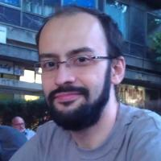

« Назад на почеток или напред кон првото интервју »
10/10 - geeks'logs
07: Програмерска експанзија со Благој Петрушев, Мите Митрески и Далибор Насевиќ

« Назад на почеток или напред кон првото интервју »
#1 НН: Кога ќе помислам на програмирање во хаклабот КИКА обично се сетувам на вас. Сепак не се сеќавам кога и како се приклучивте на заедницата. Можеме да почнеме со приказната за запознавањето, и дали програмирањето беше главната мотивација или тоа е само моја [непрограмерска] предрасуда?
БП: Ми се чини дека моите први дружења беа на НСНД Штип во 2010, не се сеќавам точно како дознав за тој настан, но ми звучеше како одлична идеја, а сега сум сигурен дека и локалните и регионалните НСНД настани се одлични - не само за хакерската заедница, туку и пошироко зборувајќи за отворена и слободна култура.
За мотивацијата - можеби на почетокот тоа било програмињето, но ми се чини дека тоа што најмногу ме врзало со заедницата е концептот „Сподели Знаење“ - идејата на споделување на корисни знаења кога тоа доаѓа од луѓе со заеднички интереси и идеали е непроценлива.
ММ: Можам да кажам дека иста група на луѓе која гравитира околку КИКА сум ја среќавал на најразлични настани во минатото како што беше предавањето на Ричард Стoлман во Македонија, но и многу порано на инсталациските фестивали, како и на настани оргазирани од JugMK. Првото појавување во хаклабот ми беше кон крајот на 2010 кога Јован Костовски (Чомбе) по мое залагање ме „довлечка“ да видам што се случува.
Повеќе од очигледно беше дека хаклабот е еден отворен простор каде лесно може да најдеш луѓе со слични интереси што може да се каже дека е реткост во оваа наша држава. Главна мотивација е за мене се тие заеднички интереси на луѓето во хаблабот. Иако сите луѓе се различни во КИКА е многу лесно да пронајдеш некој што ги чита истите книги, ја слуша истата музика или ја користи истата алатка која си сметал дека си еднствениот во Македонија што воопшто би ја погледнал.
ДН: Летото 2009-та година започнавме со МК Ruby корисничката група. Во потрагата по простор и проектор за презентации, отворив дискусија за хаклаб на поштенската листа на 2С.МК. Периодот потоа се создаде критична маса и се отвори хаклаб КИКА (што како идеја во рамките на заедницата постоела од предходно).
Тоа беше отприлика периодот на приклучување кон заедницата. Со Дамјан и Стама ми текнува се запознав на MKRUG #002 настанот во културен центар Точка. Се сеќавам бев и на некое СподелиЗнаење кај Илин во гаража и на некој инсталациски фестивал на ЕТФ предходно.
Програмирањето не е главната мотивација. Ги подржувам слободарските идеи и концептот на само-организација на луѓе. Исто така, интересно е да се слушнат нови идеи и отворат нови перспективи низ комуникација и дружење со луѓето од хаклабот.
#2 НН: Има ли бариера за влез во КИКА или заедницата воопшто?
БП: Според мене, станува збор за исклучително инклузивна заедница која се труди не само да ги привлече потенцијалните хакери, туку сите луѓе кои го сакаат отвореното општество и слободната култура. На симпатии и разбирање ќе наидат сите намерници кои се интересираат, на пример, за отфрлање на патентите или за заштита на приватноста или за отворање на јавни податоци.
На моменти во КИКА има жестоки дискусии на некои теми и нечии ставови може да изгледаат како крајно непоместливи за надворешен набљудувач. Во некои други моменти техничкиот жаргон што владее во хаклабот исто така може да изгледа заплашувачки. Но од моето искуство знам дека секој може да најде соговорници во хаклабот и секој може да се вклучи во активностите, па дури и да предложи активности.
ММ: Би лажел кога би рекол дека нема бариери во хаклабот но генералниот начин на работа е лесен за прилагодување. Целиот концепт на КИКА на прв поглед изгледа премногу туѓ бидејќи станува збор за само-финансиран и отворен простор. Тоа не е нешто на што сме секојдневно навикнати и како се што е ново и чудно на некој начин одвраќа.
Ако за пример го земеме дека GNU/Linux најчесто се користи во КИКА тогаш ќе забележиме дека делува премногу различно за некој од страна но тоа релано не е никоја пречка бидејќи има редовни посетители што користат и други оператини системи. Активност може да предложи секој и таа е често прифатена.
ДН: Бариерите генерално се создаваат кај луѓето во однос на тоа дали она што се случува во хаклабот им е интересно, дали начинот на комуникација им е прифатлив и дали времето поминато таму им е добра инвестиција.
Кај оние што не стапнале во хаклаб веројатно постои бариера на нова средина и како да се приклучат кон неа.
#3 НН: Дали настаните во КИКА каде што се учат програмски јазици или други технологии се корисни? Може ли човек да научи нешто таму? Како да биде подобро?
БП: Некои технологии што денес активно ги користам за прв пат сум ги сретнал токму во хаклабот. И покрај тоа што хакерите знаат да инсистираат на својот програмски јазик и своите алатки, секогаш кога ќе откријат некоја поефикасна, почиста или пооптимална алатка или методологија, тие со задоволство ја прифаќаат.
ММ: Голем дел од алатките кои секој ден ги користам сум ги видел за прв пат баш во КИКА. Често се случуваат прашање од типот на „Како да направам X во Y” или „Дали најдобро за ситуација X е да имам Y или треба нешто друго”.
Советот кој што ќе го добиете е во најмала рака ќе ве доведе чекор поблиску до решението што ви треба. Искуството на луѓето доаѓа од различни области, различни програмски јазици. Може да добиете совет од економија, прогармирање, администрација на сервери до нуклеарна физика, етика, и новинарсво. Многуупати сум се изненадил од најразичните решенија на даден проблем колку и да бил тривијален.
Ако зборуваме за тоа што би можело да се подобри. тоа би било некоја предфинирана програма каде барем 1 месец однапред би знаеле дека тој вториот четврток во мај ќе има многу добра презентација Tor. Имањето на некоја детална програма за 1-2 настани во месецот би го зголемил интересот кај нови потенциајни посетители.
ДН: Дефинитивно се корисни, можете да научите разни алатки и технологии или пак да добиете совет или насока за било каков проблем. Има доста луѓе кои специјализираат во различни технологии и кои сакаат да споделат знаење.
Имајќи во предвид дека презентирањето е најдобриот начин на учење, би било добро доколку повеќе луѓе се инспирираат и презентираат нешто што секојдневно го работат.
#4 НН: Кој ви е омилениот проект што се случил во КИКА?
БП:> Не можам да се одлучам помеѓу два. Првиот беше паралелно сметање со zeromq, повеќе како доказ на концепт отколку со некоја конкретна цел. На локалната мрежа во хаклабот поврзувавме 5-10 машини кои преземаат пресметковни задачи „на барање“, на крај личеше на сметачки грид. Тоа што научивме е дека со zeromq може да се паралелизираат комплексни проблеми, со многу податоци и дека не е задолжително решенијата на поединечните машини да бида имплементирани во еден ист програмски јазик.
Другиот настан во хаклабот беше затемнувањето на интернет медиумите во Македонија по повод штетниот закон за клевета. Ги поттикнавме медиумите да се помрачат, но истовремено, со индивидуалните картички за гласање на пратениците, го акцентиравме мандатот на Собранието на Македонија за тоа како гласаат и колкава штета нанесуваат.
ММ: Иако е повеќе настан отколку што е проект, понделничката прва помош според мене е најзначаен проект на КИКА. Знам дека на тој ден огромен број на луѓе поминале низ хаклабот и им било помогнато од сите што биле во можност.
Исто така проектот „Eдно лето“ беше доста амбициозен обид да се привлечат студенти од нашите факулетети беше значан во мои очи. За жал не се заврши во целост и некако не го повчен очекуваниот интерест но во секој случај имавме група на студенти кои усшено ја завршија студенската пракса работеќи со слободен софтвер.
ДН: Би го издвоил проектот „Едно лето" кој се случи летото 2011 година и кој имаше за цел да го зголеми интересот за развој на слободен софтвер. Истиот на студентите им користеше како професионална пракса за нивните студии, но најбитно беше што студентите можеа да се стекнат со практично искуство плус надвор од нивните студии. Штета што настанот престана да се случува.
Кога сме кај настани што недостасуваат, тука е секако некоја поформална конференција која би се случувала во Скопје како паралела на НСНД настаните, можеби дури и 2 пати годишно.
#5 НН: Што мислите за настаните како СподелиКино? Помагаат ли тие да се премости границата помеѓу луѓето што работат со компјутери и оние што работат на компјутери?
БП: Ми се чини дека нашата генерација сѐ уште има луѓе што, кога работат на компјутер сметаат дека тоа е нужно зло на новото време, односно, дека тоа е уште една бирократска работа која мора да ја совладаат за да си ја завршат работата. Истовремено сметам дека нашата генерација е последната која има такви луѓе, и дека после нас сите ќе ги гледаат компјутерите како алатка кој им дава моќ, накратко, за една деценија сите ќе бидат хакери.
Настаните како СподелиКино ги гледам како катализатор на овој процес. Без разлика дали филмот ја разоткрива злобата на законот за авторски права или убавините на слободниот софтвер или прогонот на слободоумните хакери во САД - на гледачите им открива перспективи со кои не се среќаваат на мејнстрим медиумите.
ММ:Сум прсуствал само на еден СподелиКино настан и можам да кажам дека станув збор за една одлична идеја. Добро е тоа што настанот привекува и не-техничка група на луѓе со што се проширува целанта група на КИКА.
Друг тип на интересни настани кои иако не се формален дел од СподелиКино но сепак се доста поврзани се гледањето на преноси од конференции во хаклабот. Едно такво одлично искуство. беше преносот од „Chaos Communication Congress” во 2011-12.
ДН: Да бидам искрен, не сум бил до сега на СподелиКино настан. Дали дека ретко гледам филмови или ретко го имало настанот... но, ќе гледам да дојдам на наредниот. :)
Идејата е супер и би требало да е забавно.
#6 НН: Дали мислите дека може да има други хаклаби во Македонија?
БП: Не. Одговорот не е песимистички, едноставно сметам дека другите градови го немаат критичниот број на луѓе за да се оствари тоа.
ММ: Често сум премногу оптимист па ќе речам да но тоа нека биде во 2100 година кога ќе сме дел од некоја европска галактичка империја и ќе заврши од оваа наша македонска транзиција.
ДН: Можно е, потребни се луѓе. Но со оглед на тоа дека сите се во Скопје поради образование и работа, малку потешко, но сепак можно е.
#7 НН: GPL или BSD? Зошто?
БП: WTFPL - do What The Fuck you want Public License - хах! Да, постои и таква.
Сериозно, немам некој силен став во однос на лиценците за слободен софтвер. Знам дека баш од светот на слободниот софтвер во последниве години доаѓаат чести напади врз GPL - сепак мора да се признае дека оваа лиценца донесе револуција во светот на софтверот воопшто, а и има и дополнителен шарм зашто е еден прекрасен правен хак на кој не сме навикнати.
Но, мора да се признае и дека попермисивни лиценци како MIT, кои дозволуваат понатамошна употреба на софтверот во proprietary софтвер, секако може да придонесат за разгорување на технолошката иновација.
ММ: Сите лиценци се супер. Реално изборот на лиценца е тесно врзан со типот на софтвер или авторско дело како и целиот бизнис модел на луѓето кои работат на истиот. Факт е дека корпорациите играат огромна улога во развојот на софтвер и често варијанти на GPL и BSD се неприфатливи во дадена ситуација. За мене MIT, Apache 2.0 а во даден случај Creative Commons се сосема доволни и дозволуваат голема слободна на корисникот на софтверот но од друга страна не гаратираат дека напредокот што го прави некоја компанија ќе биде слободен.
Овој модел на слободна во бизнис светот се покажа како многу успешен кај разични попуарни апликации како и кај огромната Apache Software Foundation.
Повеќето верзии на GPL не функционират за најголем дел од бизнис светот но тоа не значи дека ќе биде така и во иднинa, барем не ако се прашува RMS и Free Software Foundation.
ДН: Не сум експерт за лиценци, но изборот секако зависи од типот на софтвер. Доколку се работи за библиотека или фрејмворк за генерална намена, MIT би била добра лиценца бидејќи дозволува поголема слобода и можност за креирање на систем со комерцијална вредност чиј код потоа нема да биде објавен.
Доколку се работи за некој специфичен систем во целосна форма (оперативен систем, веб или десктоп апликација) каде нема многу поента во форкови, конкуренција и комерцијализација, GPL би била соодветна лиценца.
#8 НН: Дали сте објавиле ваш код под некоја лиценца за слободен софтвер?
БП: Имам објавено код на github, но не сум стасал дотаму да додадам лиценца на некој од моите проекти. Засега нема голем интерес за нив, можеби во иднина.
ММ: Да имам објавено код на различни страни како github и google code и често сум избирал Creative Commons. Постои страна која се вика tl;dr legal каде на едноставен не-правнички англиски се објаснати лиценците, и таа е честа рефенца при изборот за користење на даден софтвер.
На неколку наврати сум добивал прашања за тоа дали некој смее да користи одредени делови иако имало Apache2 лиценца во описот на страната но сите биле за проект кој користи патентиран дел па не сум имал конкретен одговор.
Она може да кажам за лиценците е дека доколку очекувате голема користеност на вашиот софтвер осигурајте се дека сте ја испочитувале во целост. За жал тоа не е случај со голем дел од проектите на github и релано нивното користење не целосно легално.
ДН: Имам објавено код на github под MIT и GPL, генерално по логиката од предходниот одговор. :)
#9 НН: Што мислите за Creative Commons и другите модели за пренесување на идеите за слободниот софтвер и отворениот код во нетехнолошки области?
БП: Прво, сметам дека Creative Commons не ја добиваа соодветна заслуга во јавноста, затоа мора да се каже дека оваа лиценца е заслужна за огромните количества мултимедија кои се прикачени за википедија. Некои нешта кои денес ги земаме здраво за готово не постоеја пред 13 години...
Оваа лиценца е доказ дека хакот на GPL може да се рефлектира и во други сфери на јавниот живот. Замислете за момент, оној кој ќе го пронајде лекот за ракот да го објави под лиценца слична на GPL? Ова ќе направи револуција во фармацевтската индустрија, или со други зборови, ќе го зголеми просечниот животен век за неколку децении.
Слично, иако нема многу врска со лиценците, моментот кога законите ќе почнат да се објавуваат во дигитална и машински читлива форма, која лесно ќе подлежи на споредба помеѓу две верзии, сметам дека ќе биде момент на права демократизација на општеството, зашто ова ќе им даде моќ на сите луѓе, а не само на правниците, да ги следат законите и ги повикуваат избраниците на одговорност. И сметам дека ова не е во некоја далечна иднина.
ММ: Оваа лиценца според мене е најфер и кон авторот на делото и кон корисникот бидејќи овозможува достапност на заењето до сите но и признавање на придонест од страна на авторот. Моите блог постови се издадени со CC Attribution-ShareAlike 3.0 Unported со што е се дозволено се додека се наведе оргиналниот извор, што е одично за нетехнолошка примена на лиценците. Очекувам дека во иднина ќе имаме се повеќе и повеќе книги со Creative Commons лиценца.
ДН: Позитивен е било каков модел на споделување знаење и достапност на знаење во слободна форма за проучување.
#10 НН: Јава, Руби и Пајтон влегуваат во паб.... што се случува? :-)
БП: Невозможна ситуација. Има 95 % веројатност во секој момент овие три јазици да се наоѓаат во хаклабот и да учествуваат во жесток flamewar.
ММ: Тој што е најбрз влегува и им купува пијачка на останатите. Тројца се опиваат до пред смрт и почуваат тепачка како од некој вестерн филм со Џон Вејн па расправаат за тоа кој е посилен, подобар, поубав а нормално и големината игра огромна улога.
ДН: Хаха. :) Најчесто се расправаат кој ќе реши одреден проблем во помалку линии код, кој e повеќе објекто-ориентиран и поелегантен и кој се користи во големи enterprise системи и има добар garbage collector. На крајот се завршува со тепачка како во некој каубојски бар. :)
{kind=link}